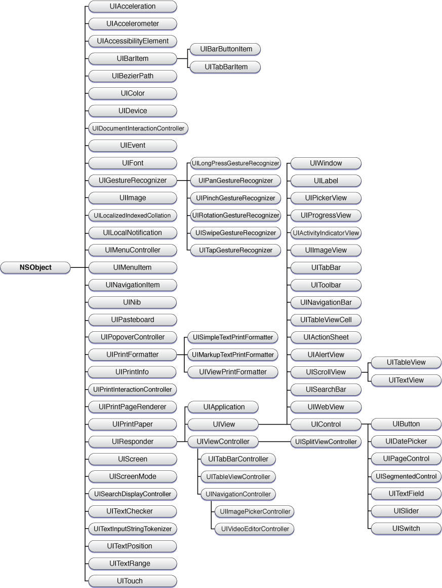

UIResponder
在 iOS中，所有响应事件处理事件的对象都直接或间接的继承UIResponder。

在 iOS 视图结构中，呈现出来的是一个 N 叉树的树形结构，每个视图都只有一个父视图，可以有多个子视图。

寻找第一响应者
当用户点击某个视图或者按钮的时候，会首先响应 applocation 中的 UIWindow 一层一层的向下查找，直到找到点击的 view，这阶段用到的两个方法：
- (UIView *)hitTest:(CGPoint)point withEvent:(UIEvent *)event; // recursively calls -pointInside:withEvent:. point is in the receiver's coordinate system
- (BOOL)pointInside:(CGPoint)point withEvent:(UIEvent *)event; // default returns YES if point is in bounds
例如有这样一个图层结构：

在上图中用户点击视图中的ViewD时，UIWindow首先接收到响应，此响应包括用户点击的区域和一个封装好的UIEvent对象，然后UIWindow通过这些信息利用以下方法查找：
UIWindow会通过调用pointInside:withEvent:方法返回的YES得知用户点击的范围在ViewA中；
ViewA调用hitTest:withEvent:方法，在方法中遍历所有的subView(ViewB、ViewC)调用hitTest:withEvent:方法；
在遍历中发现使用ViewC调用pointInside:withEvent:方法时返回YES，得知用户点击在ViewC范围之内；
ViewC调用hitTest:withEvent:方法，在方法中遍历所有的subView(ViewD、ViewE)调用hitTest:withEvent:方法;
在遍历中发现使用ViewD调用pointInside:withEvent:方法时返回YES，得知用户点击在ViewD范围之内;
在ViewD调用hitTest:withEvent:方法之前发现View的subViews的count为0，故确定用户点击在ViewD之上。
UIWindow会用遍历subviews，使用每一个subview调用hitTest:withEvent:方法，如果用户点击在某一个subview上，pointInside:withEvent:方法返回YES，再用这个subview调用hitTest:withEvent:方法，依次类推，直到当前view没有子view或点击的位置没有在其任何子view之上，便确定用户点击在某view上
- (UIView *)hitTest:(CGPoint)point withEvent:(UIEvent *)event{
for (UIView *view in self.subviews) {
if([view pointInside:point withEvent:event]){
UIView *hitTestView = [view hitTest:point withEvent:event];
if(nil == hitTestView){
return view;
}
}
}
return nil;
}
1.Alpha=0、子视图超出父视图的情况、userInteractionEnabled=NO、hidden=YES视图会被忽略，不会调用hitTest
2.父视图被忽略后其所有子视图也会被忽略
3.出现视图无法响应的情况，可以考虑上诉情况来排查问题
事件传递
事件传递的顺序其实就是寻找第一响应者的逆序，当找到了第一响应（View，button）之后，响应者就要对事件作出响应，这里就是使用了 UIResponder 的 nextResponder 方法。
nextResponder 的规则
因为UIView和UIViewController都是继承于UIResponder，所以在调用nextResponder时有几条规则如下：
当一个view调用其nextResponder会返回其superView;
如果当前的view为UIViewController的view被添加到其他view上，那么调用nextResponder会返回当前的UIViewController，而这个UIViewController的nextResponder为view的superView；
如果当前的UIViewController的view没有添加到任何其他view上，当前的UIViewController的nextResponder为nil，不管它是keyWinodw或UINavigationController的rootViewController，都是如此；
如果当前application的keyWindow的rootViewController为UINavigationController(或UITabViewController)，那么通过调用UINavigationController(或UITabViewController)的nextResponder得到keyWinodw；
keyWinodw的nextResponder为UIApplication，UIApplication的nextResponder为AppDelegate，AppDelegate的nextResponder为nil。
通过知道了上述规则，便可以通过用户点击的ViewD，查看ViewD是否响应了点击事件，如果没有找它的nextResponder，如果没有再继续找，直到找到AppDelegate再没有响应，则此点击事件被系统丢弃，大致流程如下：

事件响应链的大致流程就是如此了，大概就是一个先向下找，再向上找的过程！
无法响应的情况
参考：
https://www.cnblogs.com/easy-coding/p/3604856.html
https://developer.apple.com/documentation/uikit/touches_presses_and_gestures/using_responders_and_the_responder_chain_to_handle_events?language=objc